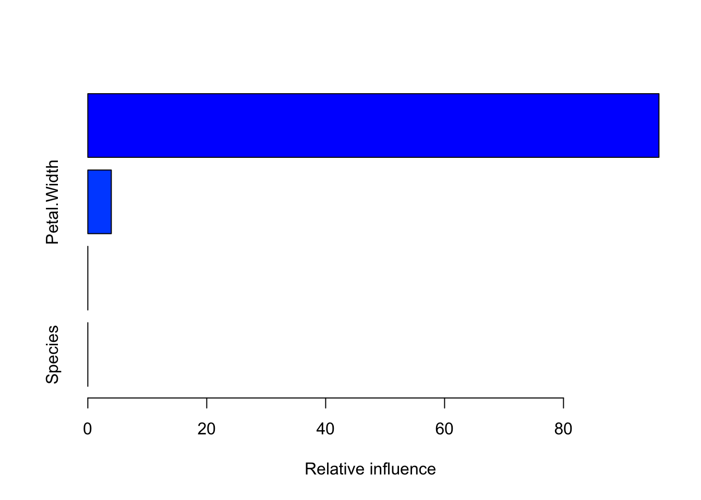

Gradient Boosting Regression Tree
Pseudo code
Input : Data \(\{x_i, y_i\}^n_{i=1}\), and a differentiable Loss function \(L(y_i, F(x))\)
Step 1 : Initialized model with a constant value: \(F_0(x) = \arg\min_{\gamma} \sum_{i=1}^n L(y_i, \gamma)\)
Step 2 : for \(m = 1\) to M:
(A) Compute \(r_{im} = -[{\partial L(y_i, F(x_i)) \over\partial F_(x_i)}]_{F(x) = F_{m-1}(x)}\) for \(i = 1,...n\)
(B) Fit a regression tree to the \(r_{im}\) values and create terminal regions \(R_{im}\), for \(j = 1,...,J_m\)
(C) For \(j = 1,...,j_m\) compute \(r_{jm} = \arg\min_{\gamma} \sum_{x_i \in R_{ij}} L(y_i, F_{m-1}(x_i) + \gamma)\)
(D) Update \(F_m(x) = F_{m-1}(x) + \nu \sum_{j=1}^{J_m} \gamma_m I(x \in R_{jm})\)
Step 3 : Output \(F_M(x)\)
Details
- Input : Data \(\{x_i, y_i\}^n_{i=1}\), and a differentiable Loss function \(L(y_i, F(x))\)
미분 가능한 loss function으로 GBM에서는 L2 norm을 선택한다. 이 때 \(\frac{1}{2}\)는 계산상의 편의를 위해서 scaling constant이다.
Loss function : \(L(y_i, F(x)) = \frac{1}{2} \sum_{i=1}^n (y_i -F(x))^2\)
loss <- function(y, yhat){
return(mean(1/2*(y-yhat)^2))
}- Step 1 : Initialized model with a constant value: \(F_0(x) = \arg\min_{\gamma} \sum_{i=1}^n L(y_i, \gamma)\)
\[ \begin{align} F_0(x) &= \arg\min_{\gamma} \sum_{i=1}^n L(y_i, \gamma) \newline &={d \over d\gamma} \frac{1}{2} \sum_{i=1}^n (y_i -\gamma^2)\newline &= -\sum_{i=1}^n(y_i - \gamma) \newline &= 0 \newline &\Leftrightarrow \hat{\gamma} = \bar{y} \end{align} \]
초기값은 y의 평균으로 계산한다.
- Compute \(r_{im} = -[{\partial L(y_i, F(x_i)) \over\partial F_(x_i)}]_{F(x) = F_{m-1}(x)}\) for \(i = 1,...n\)
\[ \begin{align} r_{im} &= -[{\partial L(y_i, F(x_i)) \over\partial F_(x_i)}]_{F(x) = F_{m-1}(x)}, \quad i = 1,...n, \quad m = \#tree \newline &\Leftrightarrow r_{im} = y_i - F_{m-1}(x_i) \end{align} \]
\(r_{im}\)은 negative gradient or pseudo residual이라고 한다. GBM은 residual을 기반으로 regression tree를 생성하는데 이 때 이용되는 residual 값이 \(r_{im}\)으로 계산된 pseudo residual이다.
negative_residual <- function(y, yhat) {
return(y - yhat)
}- Fit a regression tree to the \(r_{im}\) values and create terminal regions \(R_{im}\), for \(j = 1,...,J_m\)
tree의 깊이는 보통 8~32 정도로 구성된다. full tree가 아닌 weak learner or weak tree를 만들기 때문에 tree의 terminal regions \(R_{im}\) 에는 여러 개의 값이 존재할 수 있다.
- For \(j = 1,...,j_m\) compute \(r_{jm} = \arg\min_{\gamma} \sum_{x_i \in R_{ij}} L(y_i, F_{m-1}(x_i) + \gamma)\)
이 때 tree의 terminal regions \(R_{im}\) 에 존재하는 여러 개의 값은 \(r_{jm}\) : terminal region의 평균으로 계산된다.
\[ \begin{align} r_{jm} &= \arg\min_{\gamma} \sum_{x_i \in R_{ij}} L(y_i, F_{m-1}(x_i) + \gamma) \newline &=\arg\min_{\gamma} \sum_{x_i \in R_{ij}}\frac{1}{2}(y_i - (F_{m-1}(x_i)+\gamma)) \newline &\Leftrightarrow -\sum_{x_i \in R_{ij}}(y_i - F_{m-1}(x_i)-\gamma)) = 0 \newline &\Leftrightarrow \hat{\gamma} := terminal\; region의\;평균 \end{align} \]
- Update \(F_m(x) = F_{m-1}(x) + \nu \sum_{j=1}^{J_m} \gamma_m I(x \in R_{jm})\)
완성된 tree는 \(\sum_{j=1}^{J_m} \gamma_m I(x \in R_{jm})\) 로 표현되며 learning rate \(\nu\)를 이용해서 예측값에 대한 개별 tree의 영향력을 조절한다. \(\nu\)가 작으면 개별 tree의 영향력이 줄어들고, 계산량이 많아지지만 accuracy는 향상된다. \(\nu\)가 크면 개별 tree의 영향력이 커지고, 계산량이 상대적으로 적으며, accuracy가 상대적으로 줄어든다.
Full code
구글 서치 중에 OLS 기반으로 gradient boosting 수행하는 코드를 발견했는데 gradient boosting 알고리즘을 이해하는데 많은 도움이 되었다(실제 패키지에서는 regression tree 기반으로 계산되기 때문에 theta 값은 계산되지 않는다)
grad_boost <- function(formula, data, nu = 0.01, stop,
grad.fun, loss.fun, yhat.init = 0) {
data <- as.data.frame(data)
formula <- terms.formula(formula)
X <- model.matrix(formula, data)
y <- data[, as.character(formula)[2]] # as.character(formula)[2] : formula y~.에서 y에 해당하는 명칭
fit <- yhat.init
u <- grad.fun(y = y, yhat = fit) # pseudo residual 계산
theta <- rep(0, ncol(X))
loss <- c()
for (i in 1:stop) {
# Design matrix를 이용한 regression, OLS 기반, Tree X
base_prod <- lm.fit(x = X, y = u)
theta_i <- coef(base_prod)
# theta 값 업데이트
theta <- theta + nu*as.vector(theta_i)
# yhat 값 업데이트
fit <- fit + nu * fitted(base_prod)
# pseudo residual 계산
u <- grad.fun(y = y, yhat = fit)
# loss 값 업데이트
loss <- append(loss, loss.fun(y = y, yhat = fit))
}
names(theta) <- colnames(X)
return(list(theta = theta, u = u, fit = fit, loss = loss,
formula = formula, data = data))
}
fit <- grad_boost(formula = Sepal.Length~Sepal.Width + Petal.Length + Petal.Width + Species, data = iris, stop = 1000, grad.fun = negative_residual, loss.fun = loss)
fit$theta (Intercept) Sepal.Width Petal.Length Petal.Width
2.1711726 0.4958675 0.8292081 -0.3151416
Speciesversicolor Speciesvirginica
-0.7235307 -1.0234536 Using GBM package
패키지는 Tree 기반으로 계산되므로 고정된 coefficient 결과를 산출하지 않는다.
대신에 feature importance 값으로 변수별 상대적인 영향력을 볼 수 있다.
n.trees : tree의 갯수(the number of gradient boosting iteration), pseudo code에서 \(M\)에 해당
interaction.depth : tree당 최대 노드의 개수, 보통 8~32
shringkage : learning rate(\(\nu\))
n.minobsinnode : terminal nodes의 최소 관찰값의 수
bag.fraction (Subsampling fraction) : training set을 나눌 비율. 기본적으로 stochastic gradient boosting 전략 채택. default : 0.5
train.fraction : 첫 train.fraction * nrows(data) 관찰값은 gbm fitting에 사용되고 나머지는 loss function에서의 out-of-sample 추정량을 계산하는데 사용됨. default = 1
cv.folds : cross validation fold의 개수
verbose : 모델 진행 상황을 모니터링할건지 유무
distribution : 분류 문제일 경우 - bernoulli, multinomial, regression 문제일 경우 - gaussian or tdist
보통 bag.fraction, train.fraction은 따로 지정하지 않음.
R code
library(gbm)
fit_pack <- gbm(formula = Sepal.Length~Sepal.Width + Petal.Length + Petal.Width + Species,
data = iris,
verbose = T,
shrinkage = 0.01,
distribution = 'gaussian')Iter TrainDeviance ValidDeviance StepSize Improve
1 0.6725 nan 0.0100 0.0076
2 0.6647 nan 0.0100 0.0081
3 0.6561 nan 0.0100 0.0079
4 0.6480 nan 0.0100 0.0075
5 0.6403 nan 0.0100 0.0074
6 0.6330 nan 0.0100 0.0075
7 0.6262 nan 0.0100 0.0072
8 0.6191 nan 0.0100 0.0070
9 0.6115 nan 0.0100 0.0071
10 0.6047 nan 0.0100 0.0073
20 0.5411 nan 0.0100 0.0060
40 0.4426 nan 0.0100 0.0035
60 0.3684 nan 0.0100 0.0030
80 0.3145 nan 0.0100 0.0023
100 0.2726 nan 0.0100 0.0015summary(fit_pack)
var rel.inf
Petal.Length Petal.Length 97.863376
Petal.Width Petal.Width 2.136624
Sepal.Width Sepal.Width 0.000000
Species Species 0.000000pretty.gbm.tree(fit_pack, i = 1) SplitVar SplitCodePred LeftNode RightNode MissingNode ErrorReduction Weight
0 1 4.5500000000 1 2 3 35.72057 75
1 -1 -0.0067060606 -1 -1 -1 0.00000 44
2 -1 0.0073086022 -1 -1 -1 0.00000 31
3 -1 -0.0009133333 -1 -1 -1 0.00000 75
Prediction
0 -0.0009133333
1 -0.0067060606
2 0.0073086022
3 -0.0009133333pretty.gbm.tree()를 이용하면 개별 tree를 적합할 때 진행상황을 모니터링할 수 있다. 여기서의 predict 값은 개별 tree에 대한 값이므로 pseudo residual 값에 해당한다(참고 3).
참고 자료
참고 1 : https://www.youtube.com/watch?v=2xudPOBz-vs&list=PLblh5JKOoLUJjeXUvUE0maghNuY2_5fY6&index=2
참고 2 : https://medium.com/@statworx_blog/coding-gradient-boosted-machines-in-100-lines-of-code-d06b1d7bc084